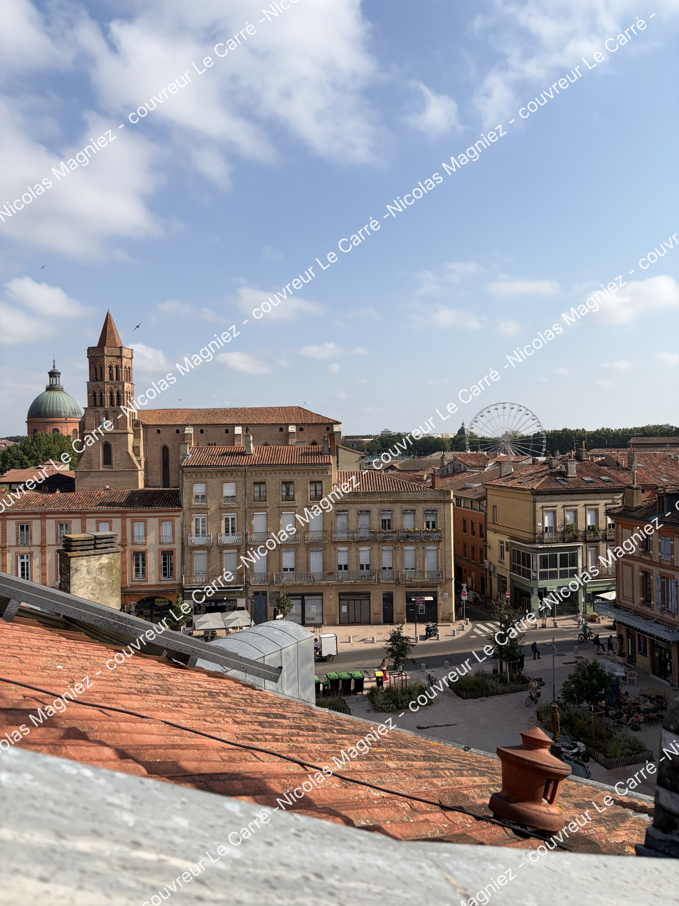
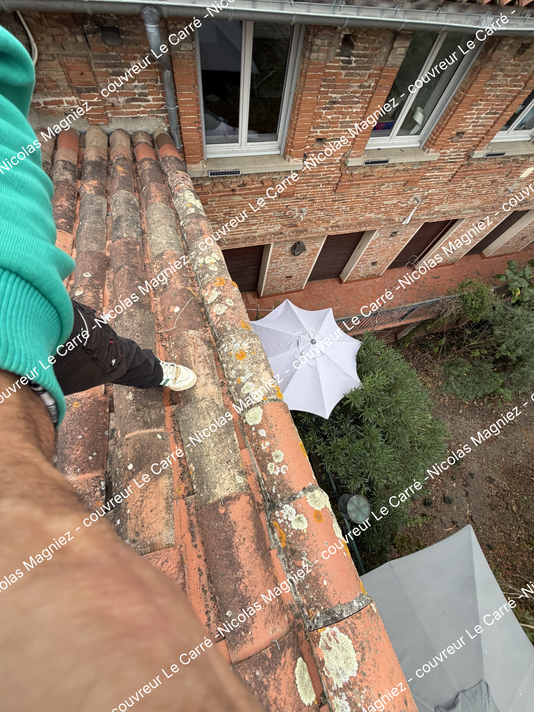
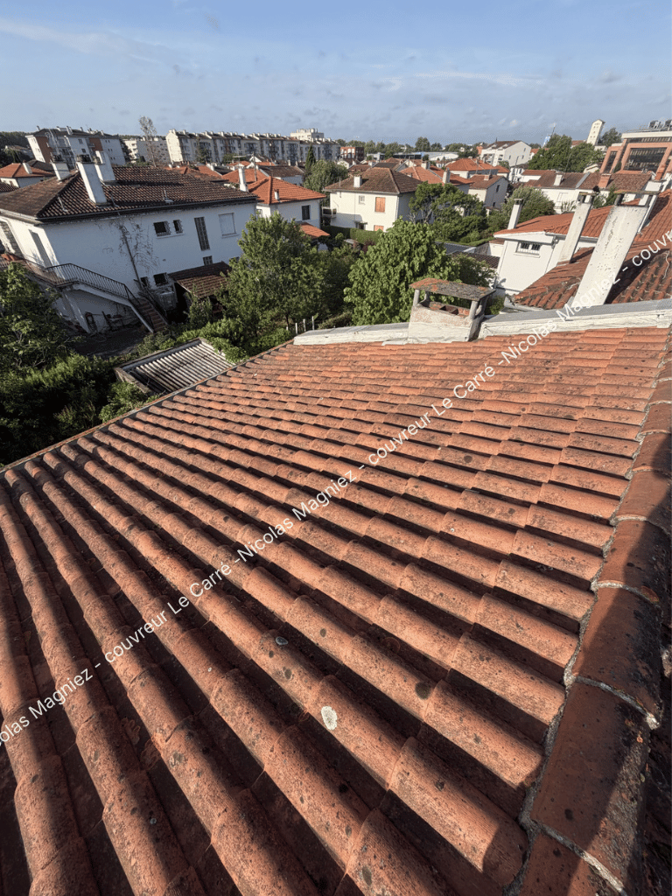

Réparer
Fuites et réparations
Recherche de fuite, tuiles déplacées, points d’étanchéité à reprendre : on identifie la cause avant de choisir la solution.
Pour Nicolas Magniez, être un bon couvreur, c'est avant tout une relation de confiance : de l'écoute, des conseils sincères et des solutions pensées dans votre intérêt.

Le Carré se différencie par une approche très relationnelle : prendre le temps d’écouter, expliquer simplement ce qui se passe sur la toiture et éviter de proposer des travaux trop lourds si une intervention ciblée peut suffire.
« Quand une réparation suffit, pourquoi proposer une rénovation complète ? »
Recherche de fuite, tuiles déplacées, points d’étanchéité à reprendre : on identifie la cause avant de choisir la solution.
Quand une intervention plus importante est nécessaire, le projet est défini clairement, étape par étape, avec une solution adaptée à la maison.
Démoussage, entretien, isolation par l’extérieur, zinguerie ou traitement de charpente : protéger dans le temps et anticiper les désordres.
Recherche de fuite, réparation et rénovation de toiture, entretien et démoussage, zinguerie et gouttières, traitement de charpente, isolation par l’extérieur, habillage des planches de rive, pose de fenêtres de toit Velux et puits de jour : Nicolas Magniez étudie chaque besoin pour proposer une intervention adaptée à votre couverture.
Zone d’intervention : Toulouse, Auterive, Nailloux, Villefranche-de-Lauragais, Montastruc-la-Conseillère, Saint-Jory, Merville, Plaisance-du-Touch et Muret.
En voici quelques exemples



« Entreprise très sérieuse. Dès la phase de devis, le professionnalisme et la clarté des explications ont été particulièrement appréciés. »
Benji — extrait d’un avis Google« Est intervenu très rapidement pour une fuite dans notre maison et nous a donné énormément de conseils très utiles sans nous forcer à la surconsommation. »
Clémence — extrait d’un avis Google« Excellente expérience. Travail propre, soigné et réalisé dans les délais. Équipe sérieuse, agréable et de bon conseil. Je recommande sans hésitation. »
Lillou — extrait d’un avis GoogleDécrivez votre situation. Pour une réparation, un entretien ou une rénovation, Nicolas Magniez reviendra vers vous pour faire le point.
« Une toiture bien pensée, une maison protégée. »